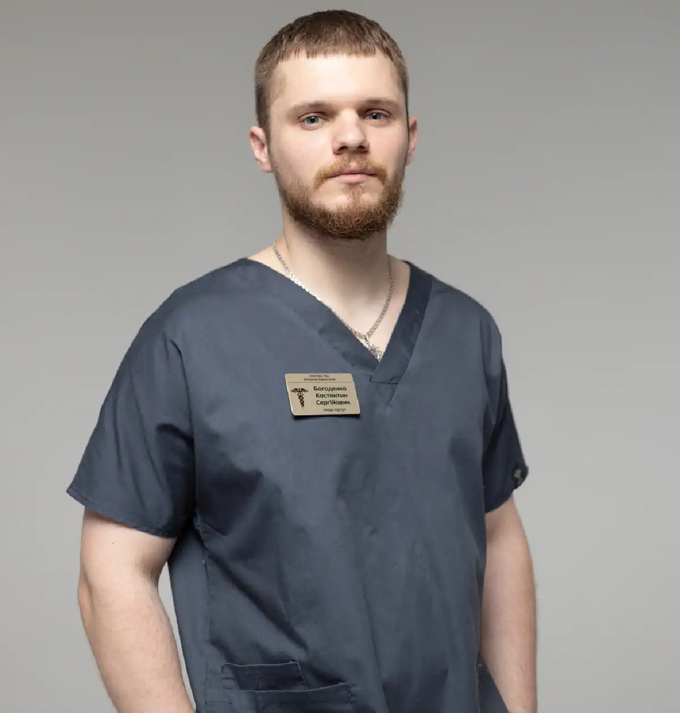

+38(068) 79 72 782
+38(068) 79 72 782Виведення з запою вдома Київ
Швидко Безпечно Анонімно


Безкоштовна консультація, працюємо цілодобово 24/7
Швидко Безпечно Анонімно
Тривалий запій — це не просто тяжке похмілля, а критичний стан організму, який потребує негайного професійного втручання. Коли людина знаходиться в цьому порочному колі, її тіло і психіка зазнають колосального навантаження. Організм зневоднений, виснажені запаси вітамінів і мінералів, нервова система перебуває на межі. Спроби самостійно впоратися із запоєм можуть призвести до серйозних ускладнень, включаючи серцеву недостатність, інфаркт, інсульт або «білу гарячку» (алкогольний делірій), яка є загрозливим для життя станом.
Саме тому виведення із запою на дому в Києві — це безпечний і ефективний спосіб перервати це порочне коло та розпочати шлях до одужання. Наш спеціаліст приїжджає до вас із усім необхідним обладнанням і медикаментами, щоб провести повноцінну процедуру в комфортних і, що вкрай важливо, анонімних умовах. Лікар негайно проводить експрес-діагностику стану пацієнта та приступає до основної частини процедури — встановлення спеціальної крапельниці від алкоголю.
Багато людей, зіткнувшись із проблемою алкогольної залежності, відчувають величезний психологічний бар’єр: вони бояться розголосу, осуду та втрати репутації. Страх за свій соціальний статус або кар’єру часто заважає зробити найважливіший крок — звернутися по допомогу. Саме тому анонімне виведення із запою на дому є не просто зручністю, а життєвою необхідністю.
Ми розуміємо, наскільки важлива конфіденційність у такій ситуації. Наш лікар приїжджає на непомітному автомобілі, без жодних упізнавальних знаків клініки. Усі медичні процедури проводяться максимально дискретно, а вся інформація про ваше лікування залишається суворо конфіденційною і не підлягає розголошенню. Це дозволяє отримати кваліфіковану допомогу в комфортній і довірчій обстановці, не хвилюючись за свою репутацію чи соціальний статус. Така атмосфера безпеки й поваги до особистого життя пацієнта створює ідеальні умови для початку лікування. Усунувши страх перед осудом, ми допомагаємо людині зосередитися на головному — своєму одужанні. Довіра й спокій — це перший крок до успішного позбавлення від залежності.
Коли людина перебуває у стані запою, кожна хвилина на рахунку. Це не просто дискомфорт, а критичний стан, за якого організм зазнає найсильнішого отруєння. Зволікання може призвести до серйозних ускладнень, включаючи серцевий напад, інсульт або розвиток «білої гарячки». Виклик нарколога додому — це швидкий і зручний спосіб отримати професійну допомогу, яка може врятувати життя.
Наш лікар приїде до вас у найкоротші терміни, щоб негайно розпочати стабілізацію стану. Він прибуває з усім необхідним обладнанням і медикаментами для повноцінної процедури. На місці спеціаліст проведе ретельний огляд, виміряє тиск, пульс, оцінить загальний стан і лише після цього приступить до надання першої допомоги. Ключовим етапом є встановлення крапельниці від алкоголю, яка миттєво починає очищати кров від токсинів, відновлювати водно-сольовий баланс і насичувати організм життєво важливими вітамінами та мінералами. Такий підхід дозволяє уникнути стресу, пов’язаного з поїздкою до клініки, і отримати допомогу в звичній і комфортній обстановці. Анонімність і приватність — це не просто слова, а важливий фактор для успішного одужання, адже коли пацієнт почувається в безпеці, він більш відкритий до лікування і готовий зробити наступний, рішучий крок.
Перед проведенням процедури важливо розуміти, що склад крапельниці від запою на дому завжди підбирається індивідуально. Лікар-нарколог особисто оцінює стан пацієнта, вираженість симптомів алкогольної інтоксикації, тривалість запою, вік, а також наявність хронічних захворювань серця, печінки, нирок та нервової системи. Ураховуються показники артеріального тиску, пульсу, рівень тривожності, наявність безсоння, тремору або судом. Лише після цього формується безпечна та ефективна схема інфузійної терапії. Нижче наведені препарати та групи засобів, які найчастіше використовуються при виведенні з запою на дому, проте їх поєднання та дози завжди визначаються індивідуально.
У підсумку, крапельниця від алкоголю при виведенні з запою на дому — це не просто набір розрізнених медикаментів. Це ретельно продуманий комплексний лікувальний підхід, який впливає одночасно на кілька життєво важливих систем організму. Така терапія дозволяє швидко полегшити стан пацієнта, мінімізувати ризики ускладнень і забезпечити більш безпечне та комфортне повернення до нормального життя з подальшою можливістю повноцінного відновлення.
Вартість послуги виведення із запою вдома у Києві починається від 2700 грн.
| Популярні Послуги | Вартість |
|---|---|
| Виведення із запою | Від 2700 грн |
| Крапельниця від алкоголю | Від 2700 грн |
| Крапельниця від наркотиків | Від 3000 грн |
| Кодування від алкоголізму Київ | Від 6000 грн |
Терміновий виклик нарколога на дім у Києві потрібен у ситуаціях, коли стан людини на тлі вживання алкоголю або виходу з запою стає небезпечним для здоров’я та життя. У таких випадках будь-які спроби самолікування, прийом сумнівних препаратів або «перетерпіти» стан можуть призвести до тяжких ускладнень. Професійна медична допомога має бути надана якнайшвидше.
При появі будь-якого з перелічених симптомів важливо не відкладати звернення за медичною допомогою. Своєчасний виклик нарколога на дім у Києві допомагає запобігти тяжким ускладненням, зберегти здоров’я та в ряді випадків — врятувати життя.
Коли ситуація стає по-справжньому критичною і кожна година запою безпосередньо загрожує життю та здоров’ю людини, терміновий вивід із запою на дому стає єдино правильним рішенням. У таких станах мова йде не про комфорт або зручність, а про життєву необхідність, оскільки будь-яке зволікання може спричинити тяжкі та незворотні наслідки. Серед них — розвиток алкогольного делірію («білої гарячки»), гострі порушення мозкового кровообігу, інфаркт міокарда, небезпечні стрибки артеріального тиску і навіть раптова зупинка серця. Особливо високі ризики у людей із хронічними захворюваннями та тривалим стажем вживання алкоголю.
Процедура «прокапатися від алкоголю» на дому дозволяє максимально швидко і ефективно зняти гостру інтоксикацію і стабілізувати загальний стан пацієнта. Завдяки внутрішньовенному введенню препаратів лікувальний ефект настає практично відразу, що дає змогу запобігти розвитку небезпечних для життя ускладнень. Такий формат допомоги особливо важливий у тих випадках, коли стан пацієнта не дозволяє безпечно транспортувати його до клініки або він категорично відмовляється від госпіталізації.
Лікар-нарколог готовий виїхати на виклик у будь-який час доби — вдень, вночі, у вихідні та святкові дні. Ми розуміємо, що в екстреній наркологічній допомозі кожна хвилина має вирішальне значення. По прибуттю фахівець проводить первинний експрес-огляд: оцінює рівень свідомості, артеріальний тиск, пульс, дихання, вираженість інтоксикації та наявність супутніх ускладнень. На основі цієї оцінки підбирається індивідуальний склад крапельниці і починається інфузійна терапія. Саме крапельниця є основним інструментом невідкладної допомоги при виведенні із запою. Вона миттєво запускає процес очищення крові від токсичних продуктів розпаду алкоголю, відновлює водно-сольовий баланс і підтримує роботу життєво важливих органів. У результаті зменшуються тремор, нудота, головний біль, тривожність і внутрішнє напруження, поступово повертаються сили та ясність свідомості.
Додатковою перевагою виведення із запою на дому є психологічний комфорт пацієнта. Звичне оточення знижує рівень стресу та тривоги, що позитивно впливає на загальний стан і ефективність лікування. При цьому людина отримує професійну, невідкладну медичну допомогу анонімно, без зайвої уваги та осуду. Все це створює безпечні та оптимальні умови для стабілізації стану та стає важливим першим кроком на шляху до подальшого відновлення і одужання.
Основним інструментом для виведення з запою є крапельниця від алкоголю. Це не просто швидкий, а найефективніший і науково обґрунтований метод детоксикації організму. Препарати, введені внутрішньовенно, миттєво потрапляють у кровотік, минаючи шлунково-кишковий тракт, що забезпечує негайний результат і швидке полегшення. Склад крапельниці завжди підбирається індивідуально, а її мета — комплексне відновлення всіх систем організму, постраждалих від алкогольної інтоксикації.
Насамперед крапельниця від запою спрямована на очищення крові від токсичних продуктів розпаду етанолу, які викликають головний біль, нудоту, тремтіння, слабкість і тривожність. Завдяки правильно підібраним розчинам нормалізується водно-сольовий баланс, усувається зневоднення та відновлюється об’єм циркулюючої крові. Це особливо важливо після тривалого запою, коли організм відчуває серйозний дефіцит рідини та електролітів, що може призводити до небезпечних порушень роботи серця та судин.
Додатково внутрішньовенна терапія підтримує роботу печінки — головного органу, відповідального за переробку алкоголю. Гепатопротекторні та метаболічні препарати допомагають прискорити виведення токсинів і знизити навантаження на печінкові клітини. Одночасно поліпшується забезпечення тканин киснем, стабілізується артеріальний тиск і серцевий ритм, що значно знижує ризик ускладнень.
Важливим ефектом крапельниці є вплив на нервову систему. Після запою людина часто страждає від безсоння, дратівливості, панічних станів і внутрішньої напруженості. Правильно підібрана інфузійна терапія сприяє м’якому заспокоєнню, зниженню тривожності та відновленню нормального сну без різкого медикаментозного впливу на психіку. Уже через кілька годин після процедури пацієнт відчуває помітне полегшення та повернення ясності свідомості.
Крапельниця від алкоголю — це не тимчасовий захід «зняти симптоми», а повноцінний лікувальний процес, спрямований на стабілізацію стану, запобігання ускладнень і підготовку організму до подальшого відновлення. Саме тому виведення з запою з використанням крапельниці вважається золотим стандартом сучасної наркологічної допомоги і проводиться під контролем лікаря-нарколога.
У повсякденному житті широко поширене переконання, що крапельниця від запою — це своєрідна «чарівна процедура», здатна за короткий час повністю зняти похмільний синдром і дозволити людині швидко повернутися до звичного ритму життя. Частково таке сприйняття формується через те, що після крапельниці дійсно настає відчутне полегшення: зменшується головний біль, проходить нудота, знижується тривожність, з’являється відчуття ясності та фізичної стабільності. Однак важливо розуміти, що у Києві цю процедуру лікарі розглядають не як просту «вітамінну підтримку», а як повноцінне медичне втручання, що потребує професійного підходу.
З точки зору звичайних людей, крапельниця від запою в Києві — це зручний і порівняно швидкий спосіб привести себе до ладу без тривалих страждань і госпіталізації. Особливо вона затребувана у ситуаціях, коли необхідно терміново відновитися та вийти на роботу або виконати важливі обов’язки. Саме тому люди активно діляться контактами лікарів та позитивним досвідом, що додатково зміцнює репутацію крапельниці як ефективного рішення. У масовій свідомості вона асоціюється з «очищенням» організму, виведенням токсинів і поверненням сил, а можливість отримати допомогу анонімно та вдома робить цей метод ще більш привабливим. Водночас лікарі-наркологи підкреслюють, що навіть найякісніше проведена крапельниця у Києві не вирішує проблему залежності як такої. Вона дійсно ефективно усуває наслідки алкогольної інтоксикації, нормалізує водно-сольовий баланс і підтримує роботу внутрішніх органів, але впливає лише на фізичний стан. Психологічна тяга до алкоголю та поведінкові причини запою залишаються без уваги, якщо обмежитися лише однією процедурою.
На практиці крапельниця від запою — це важливий, але стартовий етап лікування. Вона допомагає стабілізувати стан пацієнта, знизити ризики ускладнень і підготувати організм до подальших кроків відновлення. Без подальшої роботи з причиною залежності, консультацій спеціаліста та зміни способу життя ефект може виявитися тимчасовим, а ризик повторного запою — високим. Саме тому у Києві спеціалісти розглядають крапельницю не як панацею, а як частину комплексного підходу, спрямованого на довгострокове поліпшення здоров’я та якості життя людини.
Зняття алкогольної інтоксикації вдома — це сучасний і безпечний спосіб допомогти організму відновитися після надмірного вживання алкоголю, не залишаючи звичної обстановки. Процедуру проводить кваліфікований лікар-нарколог, який ретельно оцінює стан пацієнта, враховуючи рівень алкогольної інтоксикації, наявність хронічних захворювань, вік та індивідуальні особливості організму. Фахівець підбирає індивідуальний склад крапельниці, до якого входять детоксикаційні розчини, вітаміни, мінерали та препарати для нормалізації роботи серця і печінки, а також седативні засоби для стабілізації психоемоційного стану. Зняття алкогольної інтоксикації вдома особливо важливе для людей, які цінують анонімність і комфорт, не бажають перебувати в стаціонарі та хочуть отримати кваліфіковану допомогу у звичному середовищі. Такий підхід зменшує стрес для організму та прискорює процес відновлення. Крім того, він дає змогу своєчасно скоригувати терапію за наявності супутніх захворювань, мінімізувати ризик ускладнень і полегшити перебіг абстинентного синдрому. Комплексний підхід забезпечує м’яке й ефективне відновлення сил, покращує самопочуття, нормалізує роботу всіх життєво важливих систем організму та суттєво знижує ризик повторного зловживання алкоголем.
Багато людей, зіткнувшись із проблемою алкогольної залежності, намагаються впоратися із запоєм самостійно, використовуючи народні методи, домашні «рецепти» або безрецептурні препарати. На перший погляд це може здаватися простим і безпечним рішенням, проте на практиці такі спроби надзвичайно небезпечні та часто виявляються неефективними. Спроба самостійного виведення із запою ігнорує критичний стан організму, ступінь інтоксикації та супутні хронічні захворювання, що може призвести до незворотних наслідків для здоров’я і навіть до загрози життю.
Не ризикуйте своїм життям та здоров’ям — довіряйте кваліфікованим спеціалістам. Своєчасне звернення до нарколога додому у Києві дозволяє швидко стабілізувати стан, запобігти серйозним ускладненням і зробити перший крок до повноцінного одужання.
Обираючи послугу виведення із запою вдома у Києві, ви робите не просто крок до медичної процедури — ви робите перший і вирішальний крок до нової, здорової життя. Ми розуміємо, що звернення за допомогою потребує мужності, усвідомленості та довіри, тому створюємо максимально комфортні, безпечні та приватні умови, щоб кожен пацієнт міг отримати необхідну допомогу без зайвого стресу та переживань.
Виведення із запою вдома — це не просто спосіб швидко зняти інтоксикацію. Це можливість отримати кваліфіковану підтримку у критичний момент, коли організм зазнає максимального навантаження, а психологічний та фізичний стан особливо вразливий. Кожен день, проведений у запої, завдає непоправної шкоди здоров’ю, тому своєчасне втручання має першочергове значення. Процедура дозволяє безпечно перервати порочне коло залежності, відновити сили і підготувати організм до подальшого комплексного лікування. Ми супроводжуємо пацієнта на кожному етапі, забезпечуючи професіоналізм, безпеку та повну конфіденційність. Ваше здоров’я — наша першочергова задача, і ми готові надати підтримку у будь-якій екстреній ситуації.
Телефон для консультації та виклику нарколога на дім у Києві: +38(050-021-69-57).
Так, ми суворо дотримуємося повної конфіденційності на всіх етапах лікування. Інформація про пацієнта, діагноз та проходження терапії не передається третім особам. Звернення до нас не тягне за собою постановку на облік. Ви можете бути впевнені у безпеці та анонімності.
Програма лікування розробляється індивідуально після консультації з фахівцем. Враховуються вид залежності, її тривалість, фізичний та психологічний стан пацієнта. Такий підхід дозволяє підвищити ефективність терапії та знизити ризик зриву. Ми не використовуємо шаблонні рішення.
Так, ми супроводжуємо пацієнтів і після основного курсу лікування. Проводяться консультації, рекомендації щодо адаптації та профілактики рецидивів. За потреби можлива подальша психологічна підтримка. Це допомагає зберегти результат та повернутися до повноцінного життя.
Анонимно

Никакими усилиями самостоятельно я не смогла преодолеть запой, и наступала ломка, сопровождаемая повышенным давлением и пульсом. Тогда я решила обратиться за помощью в клинику. Врачи оказали мне неоценимую поддержку! Уже прошел месяц, и я не только не употребляю алкоголь, но даже не испытываю к нему желания!
Анонимно
Могу с уверенностью порекомендовать данный центр для тех, кто ищет помощь при выводе из запоя. Я неоднократно обращался к ним и могу сказать, что цена соответствует качеству услуг. После проведения капельницы в клинике, вся тяга к алкоголю проходит, и я чувствую себя гораздо лучше. Это действительно эффективный метод, и я благодарен клинике за их профессионализм и заботу!
Анонимно
Неоднократно я пытался бросить алкоголь самостоятельно, но каждый раз уговаривал себя продолжать. Я сначала ограничивался одной бутылкой в день, потом двумя, и в итоге вновь попадал в запой. Но в итоге, я смог прекратить употребление алкоголя только после того, как обратился в центр Амбрелла и заказал у них услугу вывода из запоя. Уже не пью 3 месяца и удалось полностью восстановиться. Благодарю врача который меня вел - Алексея Валерьевича.
Анонимно
Здравствуйте! Я хотел бы выразить свою искреннюю благодарность клинике за быстрое и профессиональное освобождение моего мужа пивного рабства! Ранее у меня уже не было никаких надежд на его выздоровление. Однако, благодаря вашим перспективным методам лечения, мы теперь идем к полному отказу от алкоголя. Вы дали нам новую надежду и оказали неоценимую помощь! Спасибо вам за все!
Анонимно
Я долгое время страдал от запоев и не мог справиться с этой проблемой. Однако, когда я обратился в этот центр, они быстро помогли мне вернуться на ноги, и самое главное - предоставили мне возможность не возвращаться к запоям. Уже почти полгода я не испытываю запоев! Это для меня настоящее чудо, я никогда не думал, что смогу так преодолеть свои проблемы. Большое спасибо центру Амбрелла!
Анонимно
Благодарю ваш центр Амбрелла за оперативное и высококачественное лечение! Женский алкоголизм - это настоящее горе, с которым невозможно справиться в одиночку. Я уже потеряла надежду, но благодаря вашей помощи, она вернулась ко мне! Отдельная благодарность врачу Станиславу Вячеславовичу, а также благодарность Богу за то, что он послал мне такое чудо как ваша центр! Спасибо вам всем!
Анонимно
Хочу выразить благодарность врачу Владиславу Алексеевичу за то, что вы избавили меня от этого ужаса. Я уже был в отчаянии, перепробовал множество клиник и центров, но только здесь я наконец получил настоящую помощь! Алкоголь полностью разрушил меня, и если бы не ваша помощь, я, возможно, уже не был бы жив. С вами я смог вернуть себе жизнь и буду благодарен вам всегда!
Номер телефону:
+380 (68) 797 27 82
+380 (50) 021 69 57
Адресу наркологічного центра вашого міста уточнюйте за
телефоном
Працюємо: Київ, Одеса, Львів, Харків, Дніпро, Запоріжжя,
Черкасах, Чугуєві, Чорноморську, Кам'янському
Telegram: t.me/umbrellaplus
Графік работы: Цілодобово